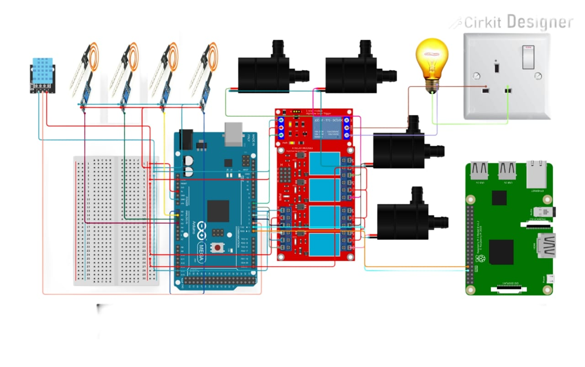

Introduction
AI-powered system optimizes irrigation by analyzing weather, soil moisture, and crop data for real-time decisions.
Working Principle
The AI-powered system analyzes weather forecasts, soil moisture, and crop type data in real-time. It adjusts irrigation schedules by activating pumps only when necessary, ensuring efficient water usage and providing crops with the optimal amount of water.

Components Used
- Raspberry Pi 3
- Arduino Mega
- Soil Moisture Sensor
- AI Model (trained for crop-specific irrigation) or API
- Water Pump
- DHT11 Sensor
- Relays
- AC Bulb
Applications
- Water Conservation: Minimizes water wastage.
- Improved Crop Yield: Optimizes crop growth.
- Cost-Effective: Reduces water expenses.
- Remote Monitoring: Enables easy system control.